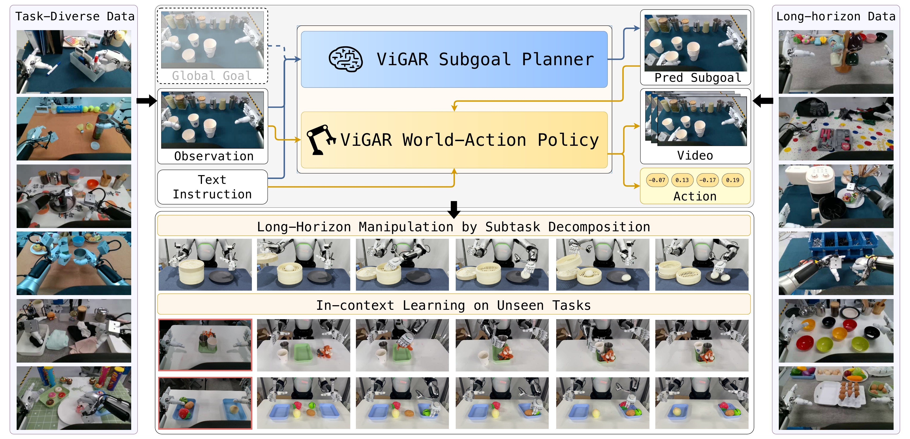
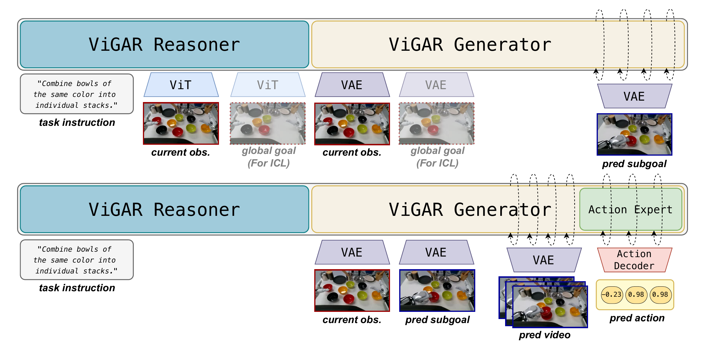
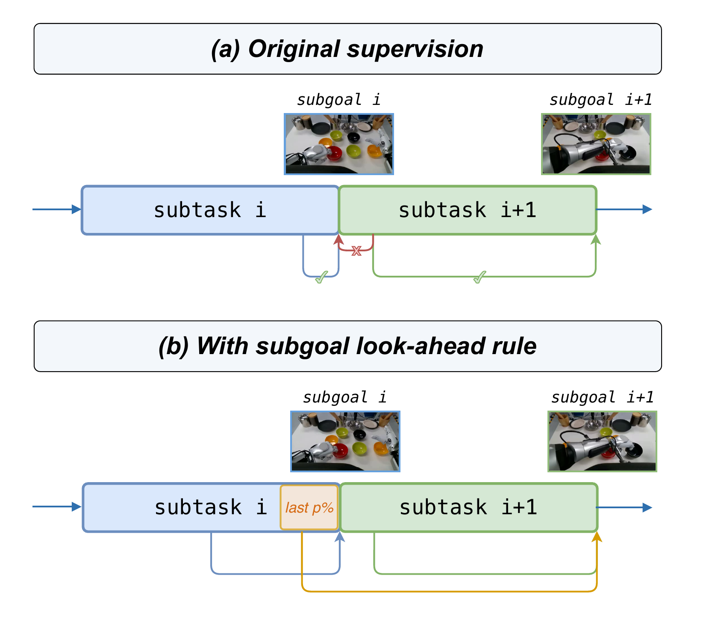
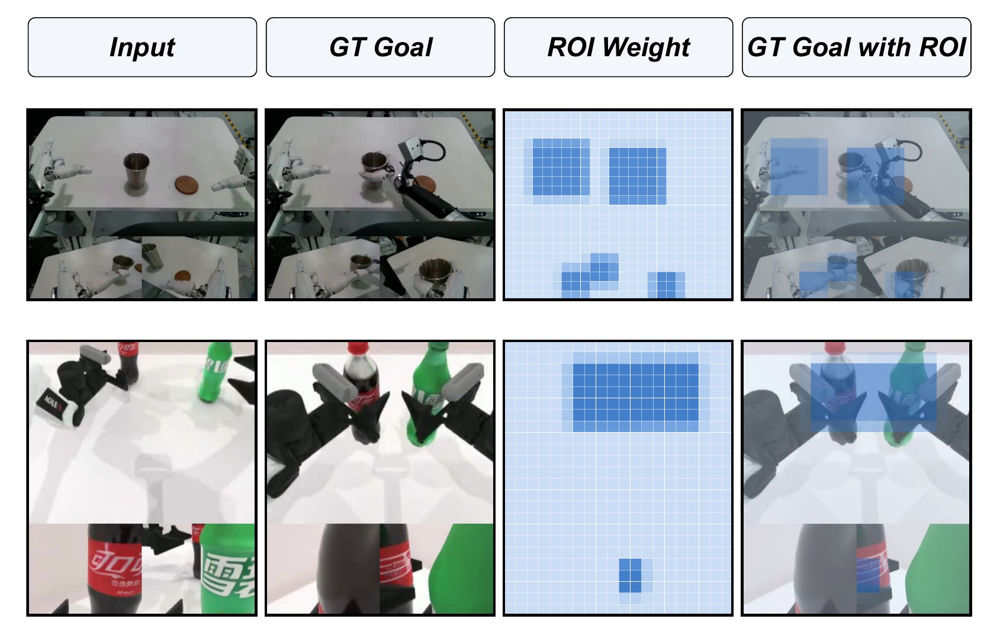
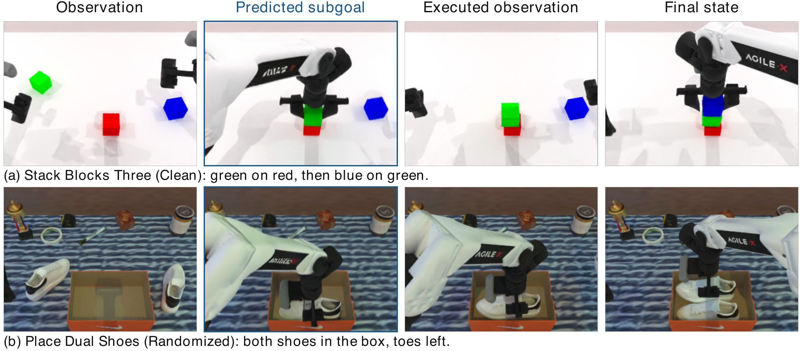

Rethinking World-Action Model for
Compositional and In-Context Robotic Manipulation
ViGAR — Visual Goal-conditioned Action Reasoning
Overview video

RoboTwin 2.0 Leaderboard
Simulation · RoboTwin Clean2Random
average success rate (%) over the Clean and Random settings · 50 tasks × 100 rollouts eachReal robot · AgiBot A2
average task progress over 5 long-horizon tasks × 20 rolloutsReal-robot Demos
Compositional manipulation
In-context manipulation from a global goal image
Same scene and instruction, different global goal. Each tile shows the goal handed to the planner (blue: head camera on top, wrist cameras below) next to the resulting rollout (red).
About ViGAR

Model architecture. (1) The subgoal planner Gθ generates the next subgoal image from the task instruction and current observation, optionally conditioned on a global goal image for in-context learning. (2) The policy πWAMφ takes the predicted subgoal and jointly predicts the future frames and the action chunk. Both share the Cosmos3-Nano reasoner–generator backbone.
Long-horizon compositional manipulation has become increasingly important for real-world robot deployment, where a single task involves multiple coordinated subtasks. Existing world-action models (WAMs) jointly predict short-horizon visual futures and actions, but typically lack explicit subtask-level reasoning. We propose Visual Goal-conditioned Action Reasoning (ViGAR), a hierarchical framework that factorizes manipulation into a visual subgoal planner and a subgoal executor. Given the current observation and global instruction, the subgoal planner predicts a visual subgoal for the next subtask. The subgoal executor then jointly generates future visual trajectories and actions conditioned on the predicted subgoal. Both components share a pretrained world-model representation, enabling task-level planning and action generation to benefit from common physical knowledge.
Moreover, our framework naturally supports in-context learning: using a global goal image as context can induce different subtask decompositions and behaviors without parameter updates. On the RoboTwin Clean2Random benchmark, ViGAR achieves 82.00% and 67.02% success rates under the Clean and Random settings, surpassing the strongest baseline by 12.81% in average success rate. Real-world robot experiments on five compositional and two in-context learning tasks further confirm the effectiveness of ViGAR.
Making subgoal supervision consistent
Two implementation choices matter for training the planner. Frames at the end of subtask i look almost identical to frames at the start of subtask i+1, yet the naive labels send them to different targets, so a planner tends to regress to a subtask that is already done. And most pixels in a subgoal are static background, so a plain reconstruction loss under-weights the region where manipulation actually happens.

Subgoal look-ahead rule. Observations in the last p% of subtask Ti are re-targeted to gi+1, so visually similar inputs across the boundary receive consistent supervision.

End-effector ROI weighting. Expert end-effector positions are projected through the calibrated cameras; the flow-matching loss is re-weighted 4:1 toward the union of windows around them.
Ablation: subgoal supervision
RoboTwin avg. success (%)Removing either component hurts; removing both costs 12 points.
Ablation: goal injection route
RoboTwin avg. success (%), ground-truth goals, 30k stepsFeeding the goal to the generator as a VAE latent (the geometric route) is what makes randomized scenes work.
Real-robot compositional manipulation
Experiments run on an AgiBot A2 with two 7-DoF arms, two wrist cameras and one front-facing camera. ViGAR is mid-trained on ∼900 hours of teleoperation data from the same embodiment (752 tasks, 200+ objects, 10+ backgrounds), then post-trained on task-specific demonstrations. Five long-horizon tasks are evaluated over 20 rollouts each and scored by task progress (fraction of sequential stages completed).
Stage-wise success
| Task | Stage | π0.5 | Cosmos3-Nano-Policy | ViGAR |
|---|
Stage k can only be attempted after stages 1…k−1 succeed, so success is non-increasing and the last stage equals full-task success. 20 rollouts per task.
In-context manipulation from a global goal image
With the initial scene and the language instruction held fixed, only a global goal image G is handed to the subgoal planner. Training demonstrations cover a restricted set of placement patterns; at test time an unseen goal specifies a task composition that was never demonstrated, and the planner decomposes it into subgoals that the unchanged policy executes.
Task progress over 20 rollouts each. OOD averages combine two unseen goal configurations with different numbers of stages.
Stage-wise success on in-context tasks
| Task | Stage | In-domain | OOD setting A | OOD setting B |
|---|---|---|---|---|
| Fruit Arrangement | S1 | 0.95 | 0.70 | 0.60 |
| S2 | 0.70 | 0.30 | 0.40 | |
| S3 | 0.50 | – | 0.30 | |
| S4 | – | – | 0.10 | |
| Progress | 0.72 | 0.50 | 0.35 | |
| Progress avg. | 0.72 | 0.43 | ||
| Desktop Item Storage | S1 | 0.90 | 0.70 | 0.60 |
| S2 | 0.75 | – | 0.30 | |
| S3 | – | – | 0.10 | |
| Progress | 0.83 | 0.70 | 0.33 | |
| Progress avg. | 0.83 | 0.52 | ||
RoboTwin Clean2Random
50 bimanual tasks on the Aloha AgileX embodiment, multi-task training on 2,500 Clean expert demonstrations, 100 rollouts per task under Clean and Random conditions. Clean is nearly saturated across WAMs; the benefit of explicit subgoal selection shows up exactly when the layout can no longer be memorized from demonstrations.
+25.2 pts over the best prior WAM under Random
RoboTwin Clean2Random, Random success rate (%) (↑)
Policy success rate (%)
| Model | Clean | Random | Avg. |
|---|---|---|---|
| Vision-language-action policies | |||
| StarVLA | 46.50 | 3.20 | 24.90 |
| Abot-M0 | 57.40 | 30.40 | 43.90 |
| X-VLA | 68.00 | 20.90 | 44.50 |
| π0.5 | 70.70 | 46.00 | 58.40 |
| World-action models | |||
| FastWAM | 77.80 | 1.90 | 39.90 |
| LingbotVA | 80.70 | 34.60 | 57.70 |
| 4D-WAM | 81.50 | 41.80 | 61.70 |
| Cosmos3-Nano-RoboTwin same recipe, no subgoal | 77.06 | 22.46 | 49.76 |
| ViGAR | 82.00 | 67.02 | 74.51 |
Cosmos3-Nano-RoboTwin is post-trained on the same 2,500 trajectories with the same recipe as ViGAR, minus subgoal guidance.
Visual subgoal prediction quality
| Model | LPIPS ↓ | DINO-cos ↑ | ΔIoU ↑ | RetAcc ↑ |
|---|---|---|---|---|
| RoboTwin | ||||
| VISTA | 0.38 | 0.54 | 0.22 | 0.82 |
| RxBrain | 0.73 | 0.19 | 0.18 | 0.79 |
| ViGAR Gθ | 0.13 | 0.80 | 0.65 | 0.94 |
| Real robot | ||||
| VISTA | 0.38 | 0.61 | 0.24 | 0.31 |
| RxBrain | 0.60 | 0.29 | 0.18 | 0.22 |
| ViGAR Gθ | 0.11 | 0.81 | 0.66 | 0.76 |
Predicted vs. ground-truth subgoals: perceptual distance, DINOv2 similarity, IoU of change masks, and subtask retrieval accuracy.

Simulation rollouts. Observation → predicted subgoal → executed observation → final state, for Stack Blocks Three (Clean) and Place Dual Shoes (Randomized).
BibTeX
@article{gong2026vigar,
title={Rethinking World-Action Model for Compositional and In-Context Robotic Manipulation},
author={Shukai Gong and Xuanran Zhai and Yintianrun Zhang and Ruopeng Cui and Ye Huang and Yiyang Fu and Dexuan Lyu and Chaojie Li and Xinyi Song and Peiwen Lin and Chuang Wang and Mingyuan Jia and Yufan Deng and Jiaxin Fang and Yuxiang Gao and Jiaxin Li and Bo Liang and Hao Liu and Daquan Zhou},
year={2026},
archivePrefix={arXiv},
primaryClass={cs.RO}
}